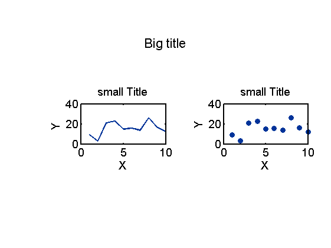
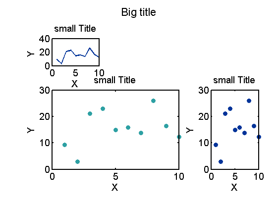

Example: how to use function [mysubplot]
This is an DEMO for my function [my_subplot].
Depends on [myplot] [mycolor]
Wei-Ting Lin 2015/9/21
This file is formatted to be published using matlab.
Contents
[mysubplot]: Create subplots with Major title
Usage:
- To make subplot:
mysubplot(L,W, ID,'Title')
[L], [W],: the dimension of subplots as in subplot(L,W,ID)
[ID]: the location of subplot as in subplot(L,W,ID);
to make larger subplot, make [ID] a vector with IDs of multiple cells- To make major title (set ID=0) :
mysubplot(L,W, 0,'Title')
[L], [W]: the dimension of subplots as in mysubplot(L,W,ID)Making mock data
X = [1:10]; Y = [1:10]+rand(10,1)'*20';
Examples:
The examples here use [myplot], a function makes pretty plots more quickly, and [mycolor], select color more easily.
If the labels overlap, manually adjust the size of figure window would likely solve the problem.
figure % making major title mysubplot(1,2,0,'Big title') % making subplots mysubplot(1,2,1) myplot(X,Y,'L') xlabel('X');ylabel('Y ') title('small Title') mysubplot(1,2,2) myplot(X,Y,'S') xlabel('X');ylabel('Y') title('small Title')
Example of merging cells
figure % making major title mysubplot(3,3,0,'Big title') % making subplots mysubplot(3,3,1) myplot(X,Y,'L') xlabel('X');ylabel('Y ') title('small Title') % making subplots of different sizes by merging cells mysubplot(3,3,[6 9]) myplot(X,Y,'S') xlabel('X');ylabel('Y') title('small Title') mysubplot(3,3,[4 5 7 8]) myplot(X,Y,'S',15) xlabel('X');ylabel('Y') title('small Title')
Error about merging cells
if assigned subplot cells does not make a square, error occur
mysubplot(2,2,[2 3])
Error using mysubplot (line 67) input cell IDs will not make a square Error in X_mysubplot (line 65) mysubplot(2,2,[2 3])